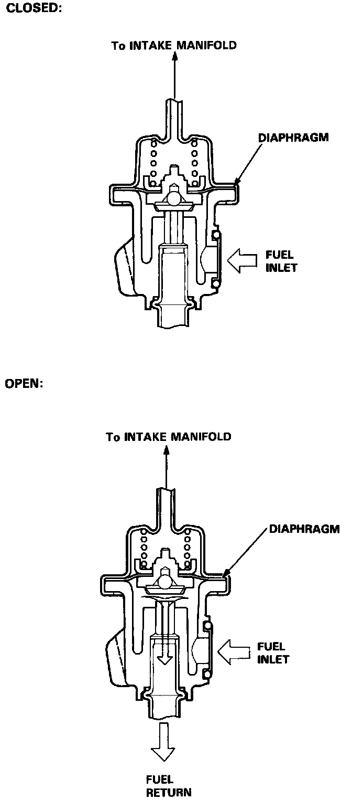

Fuel Pressure Regulator: Description and Operation
Fuel Pressure Regulator Operation:

PURPOSE
Controls the pressure of the fuel in the fuel injector rail, in response to changes in the manifold pressure.
OPERATION
When the difference between the fuel pressure and manifold pressure exceeds 300 kPa (43 psi) [GS model], 255 kPa (36 psi) [L, LS model], the diaphragm is pushed upward, and the excess fuel is fed back into the fuel tank through the return line.
CONSTRUCTION
Contains a diaphragm that has ports on both sides. One side is ported to the fuel rail, the other side is ported to manifold vacuum.